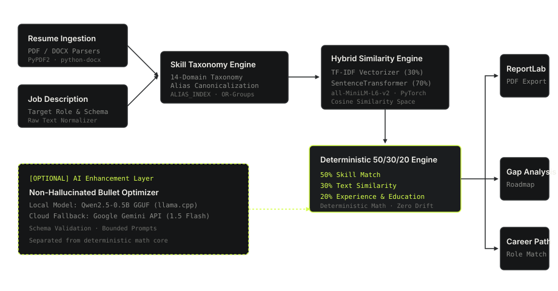

ResumeIQ — Deterministic ATS Resume Evaluator
A production-grade Applicant Tracking System (ATS) evaluation engine engineered with Flask and Python. Utilizes a deterministic 50/30/20 formula to evaluate skill taxonomy alignment, lexical/semantic similarity, and experience alignment with an optional local AI inference layer.
The Engineering Problem
Traditional Applicant Tracking Systems (ATS) typically suffer from two distinct failure modes:
- Naive Lexical Matching: Simple keyword scanners penalize qualified candidates due to vocabulary mismatches, abbreviations (e.g. "K8s" vs "Kubernetes"), or minor formatting discrepancies.
- Unbounded LLM Scorers: Pure generative AI evaluators frequently hallucinate scores, drift across runs, and cannot provide predictable, auditable criteria for hiring teams.
The Objective: Engineer an intelligent, deterministic evaluation engine that combines multi-domain skill taxonomy normalization and dense neural embeddings for accurate scoring, while isolating generative LLM capabilities strictly to optional, non-hallucinated feedback tasks.
System Architecture
ResumeIQ decouples the deterministic math engine from document processing and the optional AI inference tier.

Execution Flow Breakdown:
- Upload & Extraction: Ingests PDF/DOCX resumes via
PyPDF2andpython-docx, normalizing raw text streams. - 14-Domain Skill Taxonomy: Evaluates text against a 14-domain taxonomy, mapping abbreviations and synonyms to canonical tokens via an indexed alias registry.
- Hybrid Similarity Computation: Combines 30% lexical TF-IDF n-gram vectorization with 70% dense 384-dimensional neural embeddings using
SentenceTransformer (all-MiniLM-L6-v2). - Deterministic Scoring: Computes the weighted compatibility score: 50% Skill Match + 30% Text Similarity + 20% Experience Alignment.
- Reporting: Generates formatted multi-page PDF evaluation reports dynamically using
ReportLab. - Optional AI Layer: Employs a local
Qwen2.5-0.5B-Instruct-GGUFmodel viallama-cpp-pythonwith an automated cloud fallback to Google Gemini 1.5 Flash for non-hallucinated bullet point rewrites.
Key Engineering Decisions
Deterministic Math vs. Generative Scoring
Scoring calculations are 100% deterministic arithmetic. The same resume and job description will always produce the exact same score. The LLM is prohibited from setting scores, preventing score drift and hallucinations.
Hybrid 30/70 Similarity Model
Pure neural embeddings can miss exact technical keywords, while pure TF-IDF misses contextual synonyms. Pairing 30% TF-IDF with 70% dense SentenceTransformer embeddings provides balanced semantic and lexical alignment.
Local Quantized LLM Inference
Integrated llama-cpp-python to run a 4-bit quantized Qwen2.5 GGUF model directly on the CPU. This enables offline AI optimizations with zero API token costs, falling back to Gemini only when configured.
ReportLab Dynamic PDF Generation
Implemented programmatic vector-based PDF generation rather than browser headless printing (e.g. Puppeteer), keeping the container footprint lightweight and eliminating heavy headless browser dependencies.
Technology Specifications
| Layer / Category | Technology | Role in System |
|---|---|---|
| Backend Runtime | Python 3.12 / Flask / Waitress | REST API routing, request validation, multi-threaded WSGI serving |
| Semantic NLP | Sentence-Transformers (`all-MiniLM-L6-v2`) | 384-dimensional dense neural embeddings for semantic similarity |
| Lexical Vectorizer | scikit-learn (TF-IDF) | Sublinear n-gram lexical vector matching |
| Local AI Inference | llama-cpp-python (Qwen2.5 GGUF) | CPU-optimized quantized local LLM for bullet point optimization |
| Cloud AI Fallback | Google Gemini 1.5 Flash API | Optional cloud provider for schema parsing and optimization |
| Document Processing | PyPDF2 · python-docx · ReportLab | PDF/DOCX extraction and programmatic multi-page PDF generation |
| DevOps & CI | Docker · GitHub Actions CI | Containerized non-root execution (`appuser`) and 163 automated CI tests |
Testing & Quality Assurance
To ensure mathematical reproducibility and prevent regression across scoring updates, ResumeIQ maintains a comprehensive test suite executed automatically on every commit via GitHub Actions.